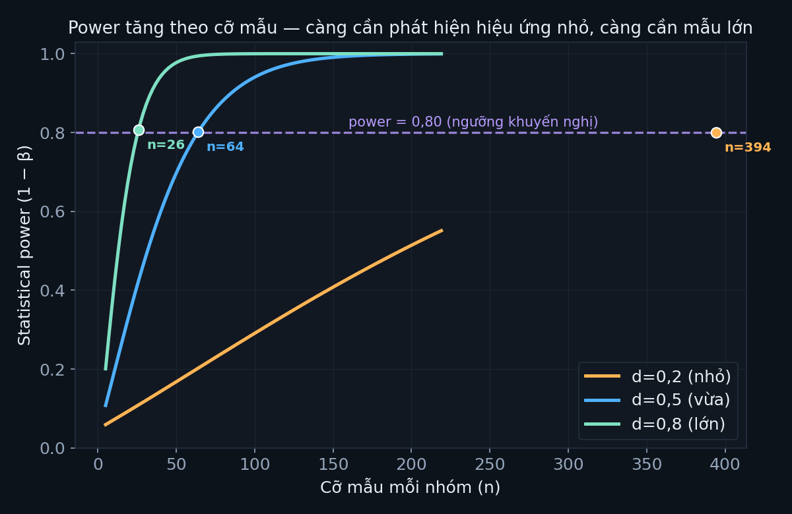

Bài giảng — SPSS cho Khoa học Xã hội
Tài liệu tự học SPSS/PSPP và thống kê cho nghiên cứu Khoa học Xã hội — 12 bài giảng bám theo giáo trình Research Methods in Education (Cohen, Manion & Morrison, ấn bản 8, Routledge 2018), có sơ đồ minh hoạ, bộ dữ liệu thật, và câu hỏi tự kiểm tra.
📌 Khánh Linh & chị Trúc Vy đọc phần này trước khi chọn bài
Trang này không dạy theo đúng thứ tự 12 buổi của môn EDU660 — nó bám theo chương trong sách Research Methods in Education (Cohen, Manion & Morrison) để nội dung có hệ thống, không lặp/thiếu khái niệm nền. Vì vậy bảng dưới đây dịch ngược lại: buổi nào của EDU660 tương ứng module nào ở đây, để mỗi người biết chính xác nên đọc gì, khi nào.
Cho Khánh Linh — theo lịch môn EDU660 (7 buổi online Chaoxing + 5 buổi offline)
| Buổi EDU660 | Nội dung trên Chaoxing | Đọc module nào ở đây | Xong trước |
|---|---|---|---|
| B1–B2 | Kiến thức thống kê cơ bản, thống kê mô tả, tương quan | Module 01, 03, 08 (đã có) | 28/9 (offline B3) |
| B4–B5 | Phân phối xác suất, ước lượng tham số | Module 04 (đã có) | 19/10 (offline B6) |
| B7–B8 | Kiểm định giả thuyết, ANOVA, phi tham số | Module 05, 06 (đã có), Module 07 (đang làm) | 9/11 (offline B9) |
| B10 | Hồi quy đơn/đa biến, phân tích nhân tố (tự chọn) | Module 09, 10 (đang làm) | 23/11 & 30/11 (offline B11–B12) |
Nguồn lịch: General_Course_Schedule.docx / Lich_Trinh_Mon_Hoc_Chung.docx / 课程总体安排.docx. Hiện tại Module 01, 02, 03, 04, 05, 06, 08 đã xong (đủ cho B1–B2, B4–B5, phần lớn B7–B8) — các module còn lại đang làm dần, ưu tiên xong trước từng mốc offline ở trên. Bài tập SPSS chính thức của trường vẫn nộp bằng SPSS thật của trường; trang này chỉ để hiểu khái niệm chắc hơn trước khi thực hành.
Cho chị Trúc Vy — không cần theo lịch của Linh
Vì máy chị Vy (MacBook M1, ổ đĩa gần đầy) không cài được SPSS bản trường cấp, chị không cần thực hành theo từng module — ưu tiên đọc phần khái niệm + ví dụ ở đầu mỗi module (không cần bấm PSPP/SPSS theo), và dùng các notebook Python chạy trên Colab ở trang Bộ dữ liệu nếu muốn tự tay thử — mở bằng trình duyệt, không cần cài gì. Thứ tự đọc gợi ý: Module 01 → 03 → 08 → 05 (nền tảng → mô tả → tương quan → kiểm định), phù hợp hướng nghiên cứu tâm lý học hơn là bám sát lịch EDU660.
Thang đo & bản chất dữ liệu định lượng
ch.38
Mở bài giảng →
MODULE 02Chọn mẫu & cỡ mẫu
ch.12
Mở bài giảng →
MODULE 03Thống kê mô tả
ch.40
Mở bài giảng →
MODULE 04Phân phối, giả thuyết & ý nghĩa thống kê
ch.38–39
Mở bài giảng →
MODULE 05Kiểm định t (độc lập, bắt cặp, một mẫu)
ch.41.2
Mở bài giảng →
MODULE 06ANOVA một/hai chiều & hậu kiểm
ch.41.3
Mở bài giảng →
MODULE 07Chi-square & kiểm định phi tham số
ch.41.4–41.7
Mở bài giảng →
MODULE 08Tương quan Pearson & tương quan riêng phần
ch.40.5–40.6
Mở bài giảng →
Hồi quy tuyến tính đơn & đa biến
ch.42
Sắp có
Phân tích nhân tố & phân tích cụm
ch.43
Sắp có
Chọn đúng kiểm định thống kê
ch.44
Sắp có
Độ tin cậy, độ giá trị & đạo đức nghiên cứu
ch.14
Sắp có
Quy trình nghiên cứu định lượng — chi tiết từng bước
Bấm vào từng bước để xem khung lý thuyết, công thức (đóng khung, có chú giải từng ký hiệu), ví dụ áp dụng cho ngành chính sách giáo dục / sư phạm tiếng Trung, và số liệu tính thật bằng statsmodels/PSPP (không có con số nào bịa ra) — đặc biệt bước 5 (pilot) và bước 6 (cỡ mẫu) trả lời trực tiếp câu hỏi "thu bao nhiêu mẫu là đủ, có căn cứ khoa học nào không".
1Câu hỏi nghiên cứu & giả thuyếtXác định biến, H0/H1, hướng kiểm định
Theo Cohen, Manion & Morrison (2018, tr.729), mọi thiết kế định lượng bắt đầu từ việc chuyển một mối quan tâm thực tiễn (vd "chương trình đào tạo giáo viên tiếng Trung mới có tốt hơn không") thành một câu hỏi có thể kiểm định bằng dữ liệu — nghĩa là phải xác định được rõ biến độc lập (cái thay đổi/can thiệp) và biến phụ thuộc (cái đo lường kết quả) trước khi nghĩ tới bước thu thập dữ liệu nào. Đây là nền tảng của toàn bộ 13 bước còn lại: sai ở bước này (câu hỏi mơ hồ, không đo được) sẽ lan sang mọi bước sau, kể cả khi kỹ thuật thống kê ở bước 12 làm đúng tuyệt đối.
Câu hỏi đã sửa (dùng được): "Học sinh học phát âm thanh điệu tiếng Trung bằng phần mềm trực quan hoá thanh điệu (biến độc lập, 2 mức: có dùng / không dùng) có đạt điểm bài thi HSKK sơ cấp phần phát âm (biến phụ thuộc, thang điểm 0–100) cao hơn nhóm học theo phương pháp truyền thống không?" — cả 2 biến đều rõ, đều đo được.
2Tổng quan tài liệuXem lại nghiên cứu đã có trước khi tự bịa giả thuyết
Tổng quan tài liệu không chỉ để "trích dẫn cho đủ lệ" — nó là nguồn DUY NHẤT cho phép ước lượng trước cỡ hiệu ứng (effect size) kỳ vọng, thứ bắt buộc phải có ở bước 6 (tính cỡ mẫu). Không có tổng quan tài liệu nghiêm túc, bước 6 sẽ phải đoán mò cỡ hiệu ứng — dẫn tới cỡ mẫu tính ra hoặc quá nhỏ (nghiên cứu thất bại vì thiếu power) hoặc quá lớn (lãng phí nguồn lực).
3Chọn thiết kế nghiên cứuThực nghiệm, bán thực nghiệm, hay quan sát/khảo sát
Thiết kế nghiên cứu quyết định LOẠI kết luận được phép rút ra, độc lập với kỹ thuật thống kê dùng sau đó. Randomised Controlled Trial (phân nhóm ngẫu nhiên thật) là thiết kế duy nhất cho phép suy luận nhân quả chặt chẽ; quasi-experimental (nhóm có sẵn, không ngẫu nhiên hoá được — rất phổ biến trong nghiên cứu giáo dục vì không thể ngẫu nhiên hoá học sinh vào lớp) và observational/survey chỉ cho phép nói về LIÊN HỆ.
| Thiết kế | Ví dụ trong ngành | Suy luận được phép |
|---|---|---|
| Thực nghiệm ngẫu nhiên hoá | Ngẫu nhiên chia học sinh mới nhập học vào lớp dùng/không dùng phần mềm thanh điệu | Nhân quả (mạnh nhất, nhưng khó xin phép nhà trường) |
| Bán thực nghiệm | So sánh 2 lớp CÓ SẴN — một lớp trường A dùng phần mềm, một lớp trường B không dùng | Liên hệ có kiểm soát một phần (phải kiểm soát biến gây nhiễu như trình độ đầu vào) |
| Khảo sát/quan sát cắt ngang | Khảo sát chính sách hỗ trợ học phí ngành Sư phạm tiếng Trung tại nhiều tỉnh cùng một thời điểm | Chỉ liên hệ/tương quan, không nhân quả |
4Xác định tổng thể & khung lấy mẫuAi là đối tượng thật sự muốn suy luận tới
Ba khái niệm hay bị lẫn lộn: tổng thể (population) là toàn bộ nhóm muốn suy luận tới trên lý thuyết; khung lấy mẫu (sampling frame) là danh sách THẬT có thể chọn mẫu từ đó; mẫu (sample) là tập con thực tế được đo. Sai lệch giữa khung lấy mẫu và tổng thể thật (coverage error) là nguồn sai số hay bị bỏ qua nhất trong nghiên cứu giáo dục — chẳng hạn khung mẫu PISA chỉ có trường CÓ ĐĂNG KÝ tham gia khảo sát, có thể không đại diện hết cho mọi trường.

5Nghiên cứu thí điểm (Pilot study)Cỡ mẫu pilot bao nhiêu là đủ? Có công thức không?
Pilot study không phải bước "làm cho có" — về mặt lý thuyết đo lường, nó là bước DUY NHẤT cung cấp ước lượng độ lệch chuẩn (SD) thật của biến đo lường, thứ bắt buộc phải có trong công thức tính cỡ mẫu chính thức ở bước 6. Không có SD ước lượng từ pilot (hoặc từ tổng quan tài liệu ở bước 2), công thức bước 6 không thể tính được — đây là lý do bước 5 và bước 6 luôn đi liền nhau về mặt logic, dù trình bày thành 2 bước riêng.
- npilotsố quan sát cần cho MỖI nhóm trong nghiên cứu thí điểm
- 12ngưỡng tối thiểu — dưới mức này, sai số chuẩn của SD ước lượng dao động quá lớn (có thể lệch >20% so với SD thật), làm bước 6 tính cỡ mẫu chính thức không đáng tin
6Tính cỡ mẫu chính thứcPower analysis — công thức, chú giải ký hiệu, bảng số thật
Power analysis dựa trên 4 tham số ràng buộc lẫn nhau: mức ý nghĩa α (xác suất chấp nhận sai lầm loại I — kết luận "có khác biệt" trong khi thực ra không có), power 1−β (xác suất phát hiện đúng hiệu ứng thật khi nó tồn tại — bổ sung của sai lầm loại II β), cỡ hiệu ứng kỳ vọng (từ bước 2/5), và cỡ mẫu n. Biết 3 trong 4 tham số, tính được tham số còn lại — quy trình chuẩn là cố định α=0,05 và power=0,80 (quy ước phổ biến nhất, theo Cohen 1988), lấy cỡ hiệu ứng từ bước 2/5, để tính n.
- ncỡ mẫu cần thiết cho MỖI nhóm (không phải tổng 2 nhóm)
- zα/2giá trị tới hạn của phân phối chuẩn ứng với mức ý nghĩa α, chia đôi vì kiểm định 2 đuôi — với α=0,05 thông dụng, zα/2 = 1,96
- zβgiá trị tới hạn ứng với xác suất bỏ lỡ hiệu ứng thật β = 1 − power — với power=0,80 (β=0,20) thông dụng, zβ = 0,84
- dcỡ hiệu ứng Cohen's d kỳ vọng — ước lượng từ tổng quan tài liệu (bước 2) hoặc pilot (bước 5), KHÔNG được tự đoán không có căn cứ
- × 2hệ số nhân đôi vì đang so sánh GIỮA 2 nhóm độc lập, mỗi nhóm đóng góp một phần phương sai vào công thức
- 16xấp xỉ của (zα/2 + zβ)² × 2 khi cố định α=0,05 và power=0,80 — chỉ đúng với đúng 2 mức này, đổi power thì hằng số 16 cũng đổi theo
- dcỡ hiệu ứng Cohen's d kỳ vọng, giống công thức đầy đủ ở trên

statsmodels.stats.power.TTestIndPower, α=0,05, power=0,80, kiểm định 2 đuôi — giống hệt công cụ đã dùng trong Module 04 của khoá học:
| Cỡ hiệu ứng d | Mức | Cỡ mẫu/nhóm | Tổng 2 nhóm |
|---|---|---|---|
| 0,2 | Nhỏ | ≈394 | ≈787 |
| 0,5 | Vừa | ≈64 | ≈128 |
| 0,8 | Lớn | ≈26 | ≈51 |
statsmodels.stats.power.FTestAnovaPower.
Với 3 nhóm, α=0,05, power=0,80: f=0,25 (vừa) cần ≈157 người/nhóm (tổng ≈472). Với tương quan
Pearson, quy đổi r sang d qua công thức d = 2r/√(1−r²) rồi tính như t-test: muốn phát hiện r=0,3
(mức vừa) cần khoảng 41 người; r=0,1 (nhỏ, thường gặp trong dữ liệu quan sát xã hội) cần tới ≈389
người — đây là lý do các nghiên cứu PISA quy mô lớn (195 trường, 7.368 học sinh) mới đủ sức phát
hiện các hiệu ứng nhỏ mà nghiên cứu cỡ mẫu nhỏ sẽ bỏ lỡ.7Thiết kế công cụ đo lườngBảng hỏi, thang đo — độ tin cậy & độ giá trị
Một công cụ đo lường (bảng hỏi, bài kiểm tra, thang thái độ) phải thoả 2 tiêu chuẩn độc lập nhau: độ tin cậy (reliability, tính nhất quán khi đo lặp lại) và độ giá trị (validity, có đang đo đúng khái niệm muốn đo không). Một thang đo có thể tin cậy cao nhưng KHÔNG có giá trị — ví dụ một thang đo "động lực học tiếng Trung" nhất quán qua nhiều lần đo nhưng thực chất chỉ đang đo "mức độ hài lòng với giáo viên" — nên 2 tiêu chuẩn phải kiểm tra riêng, không thể suy từ cái này ra cái kia.
- ksố câu hỏi (item) trong thang đo
- σᵢ²phương sai của từng câu hỏi riêng lẻ
- σ²ₜphương sai của tổng điểm toàn thang đo
- αhệ số từ 0 đến 1 — ngưỡng thường dùng: >0,7 chấp nhận được, >0,8 tốt
8Đạo đức nghiên cứuChấp thuận của hội đồng, sự đồng ý tự nguyện
Đạo đức nghiên cứu không phải thủ tục hành chính đặt sau cùng — theo khung của Cohen et al. (ch.7, sẽ xây thành Module 12 của khoá học), nó phải được thiết kế NGAY TỪ bước 1 (câu hỏi nghiên cứu có xâm phạm quyền riêng tư không?) và bước 7 (bảng hỏi có câu nào nhạy cảm/gây tổn thương không?), không phải một bước riêng biệt làm sau khi mọi thứ khác đã xong.
9Thu thập dữ liệuBảng hỏi, kiểm tra, phỏng vấn theo đúng thiết kế đã chọn
Về nguyên tắc đo lường, giá trị của mọi ước lượng tính từ bước 5–6 (SD, cỡ mẫu, power) chỉ còn đúng nếu quy trình thu thập dữ liệu chính thức GIỐNG HỆT quy trình đã pilot — đây là một hệ quả logic trực tiếp, không phải một khuyến nghị chung chung.
10Làm sạch dữ liệuNgoại lai, giá trị thiếu, mã hoá — xem Module 01/03/04
Làm sạch dữ liệu không phải một bước kỹ thuật đơn giản "xoá số liệu xấu" — mỗi quyết định (giữ/xoá một giá trị, cách xử lý dữ liệu thiếu) đều là một giả định thống kê ngầm ảnh hưởng tới kết luận cuối. Nguyên tắc chung: PHÂN LOẠI trước khi XỬ LÝ — biết một giá trị là lỗi nhập liệu hay cực đoan thật, biết dữ liệu thiếu là MCAR/MAR/MNAR (xem Module 03), rồi mới quyết định cách xử lý.
11Thống kê mô tảTóm tắt mẫu trước khi suy luận — Module 01, 03
Thống kê mô tả không phải "bước phụ trước khi vào phần chính" — nó là bước KIỂM TRA ĐIỀU KIỆN AN TOÀN bắt buộc cho mọi kiểm định suy luận ở bước 12 (t-test/ANOVA đòi hỏi phân phối gần chuẩn, phương sai đồng nhất — xem 4 điều kiện an toàn ở Module 05/06). Bỏ qua bước này để chạy thẳng kiểm định suy luận là nguyên nhân phổ biến nhất dẫn tới kết luận sai.
12Thống kê suy luậnChọn đúng kiểm định — Module 05, 06, 07, 08
Việc chọn kiểm định không phải "thử hết rồi lấy cái có p<0,05" (đây là p-hacking) — phải chọn TRƯỚC khi nhìn kết quả, dựa trên 3 câu hỏi cấu trúc dữ liệu: số nhóm so sánh, độc lập hay liên quan (cùng đối tượng đo 2 lần), và dữ liệu có thoả điều kiện tham số không.
13Diễn giải kết quả & hạn chếEffect size, không suy nhân quả vội — Module 04
Một kết quả có ý nghĩa thống kê (p<0,05) KHÔNG tự động có ý nghĩa thực tiễn — cỡ mẫu đủ lớn có thể làm một khác biệt cực nhỏ (d=0,05, gần như không quan trọng) vẫn cho p<0,05. Vì vậy báo cáo p-value một mình luôn không đủ — bắt buộc phải kèm cỡ hiệu ứng để người đọc tự đánh giá mức độ quan trọng thực tiễn.
14Báo cáo & công bốViết đúng chuẩn APA, minh bạch toàn bộ quy trình
Minh bạch quy trình (transparency) là nguyên tắc xuyên suốt cả 14 bước của pipeline này, không chỉ riêng bước cuối — mọi con số trên trang này (kể cả bảng cỡ mẫu ở bước 6) đều tính trực tiếp từ công cụ thật (statsmodels, PSPP), có thể tái lập được. Báo cáo nghiên cứu cũng cần đạt chuẩn tương tự: người đọc phải có đủ thông tin để tự đánh giá độ tin cậy, không chỉ tin vào kết luận được viết ra.